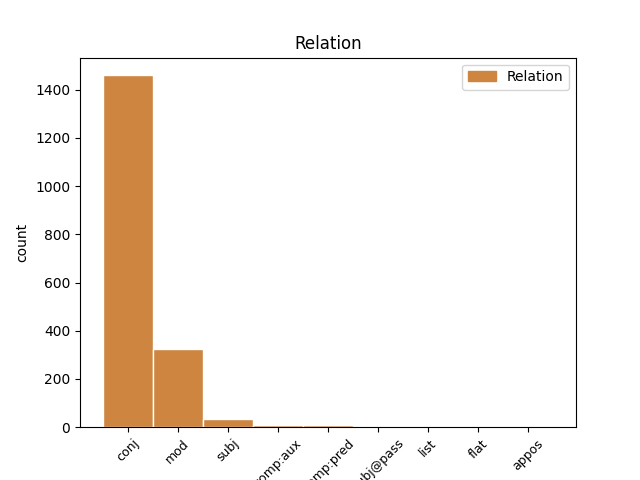
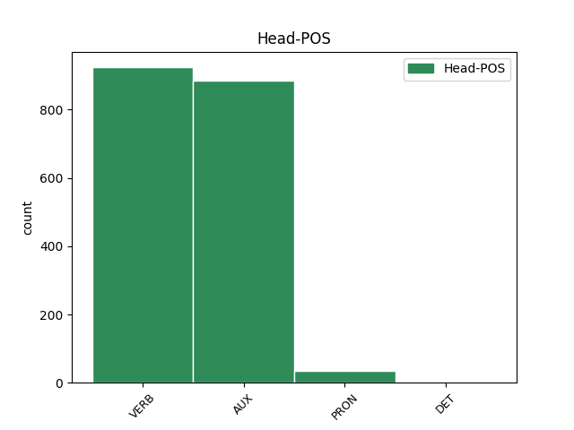
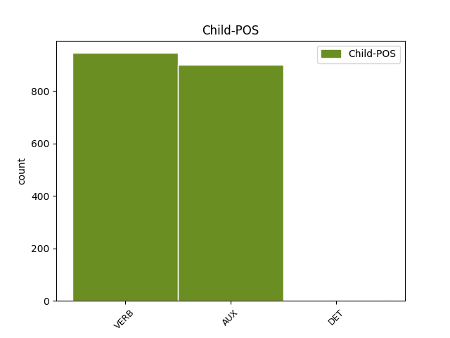

Distribution of features within this leaf



Agreement Rules sorted by frequency.
- When the dependent token is the conjunct(conj) of the head token, and the dependent token is VERB.
1 Inače _ _ _ _ 0 _ _ _
2 , _ _ _ _ 0 _ _ _
3 od _ _ _ _ 0 _ _ _
4 početka _ _ _ _ 0 _ _ _
5 re-emitiranja _ _ _ _ 0 _ _ _
6 serije _ _ _ _ 0 _ _ _
7 2002. _ _ _ _ 0 _ _ _
8 Top _ _ _ _ 0 _ _ _
9 Gear _ _ _ _ 0 _ _ _
10 je biti AUX Var3s Mood=Ind|Number=Sing|Person=3|Tense=Pres|VerbForm=Fin 0 _ _ _
11 imao _ _ _ _ 0 _ _ _
12 18 _ _ _ _ 0 _ _ _
13 sezona _ _ _ _ 0 _ _ _
14 i _ _ _ _ 0 _ _ _
15 147 _ _ _ _ 0 _ _ _
16 epizoda _ _ _ _ 0 _ _ _
17 , _ _ _ _ 0 _ _ _
18 a _ _ _ _ 0 _ _ _
19 njihova _ _ _ _ 0 _ _ _
20 Facebook _ _ _ _ 0 _ _ _
21 stranica _ _ _ _ 0 _ _ _
22 trenutno _ _ _ _ 0 _ _ _
23 ima imati VERB Vmr3s Mood=Ind|Number=Sing|Person=3|Tense=Pres|VerbForm=Fin 10 conj _ _
24 12,1 _ _ _ _ 0 _ _ _
25 milijun _ _ _ _ 0 _ _ _
26 likeova _ _ _ _ 0 _ _ _
27 . _ _ _ _ 0 _ _ _
1 Primjena _ _ _ _ 0 _ _ _
2 vode _ _ _ _ 0 _ _ _
3 u _ _ _ _ 0 _ _ _
4 kozmetičke _ _ _ _ 0 _ _ _
5 svrhe _ _ _ _ 0 _ _ _
6 datira datirati VERB Vmr3s Mood=Ind|Number=Sing|Person=3|Tense=Pres|VerbForm=Fin 0 _ _ _
7 još _ _ _ _ 0 _ _ _
8 u _ _ _ _ 0 _ _ _
9 antičko _ _ _ _ 0 _ _ _
10 doba _ _ _ _ 0 _ _ _
11 , _ _ _ _ 0 _ _ _
12 a _ _ _ _ 0 _ _ _
13 danas _ _ _ _ 0 _ _ _
14 su biti AUX Var3p Mood=Ind|Number=Plur|Person=3|Tense=Pres|VerbForm=Fin 6 conj _ _
15 dostupne _ _ _ _ 0 _ _ _
16 cijele _ _ _ _ 0 _ _ _
17 linije _ _ _ _ 0 _ _ _
18 kozmetičkih _ _ _ _ 0 _ _ _
19 proizvoda _ _ _ _ 0 _ _ _
20 temeljene _ _ _ _ 0 _ _ _
21 na _ _ _ _ 0 _ _ _
22 termalnim _ _ _ _ 0 _ _ _
23 vodama _ _ _ _ 0 _ _ _
24 . _ _ _ _ 0 _ _ _
1 Slikovito _ _ _ _ 0 _ _ _
2 rečeno _ _ _ _ 0 _ _ _
3 , _ _ _ _ 0 _ _ _
4 uobičajen _ _ _ _ 0 _ _ _
5 , _ _ _ _ 0 _ _ _
6 i _ _ _ _ 0 _ _ _
7 modno _ _ _ _ 0 _ _ _
8 nametnut _ _ _ _ 0 _ _ _
9 način _ _ _ _ 0 _ _ _
10 odijevanja _ _ _ _ 0 _ _ _
11 suvremene _ _ _ _ 0 _ _ _
12 žene _ _ _ _ 0 _ _ _
13 karakteriziraju karakterizirati VERB Vmr3p Mood=Ind|Number=Plur|Person=3|Tense=Pres|VerbForm=Fin 0 _ _ _
14 duboki _ _ _ _ 0 _ _ _
15 izrazi _ _ _ _ 0 _ _ _
16 gdje _ _ _ _ 0 _ _ _
17 god _ _ _ _ 0 _ _ _
18 je _ _ _ _ 0 _ _ _
19 i _ _ _ _ 0 _ _ _
20 koliko _ _ _ _ 0 _ _ _
21 god _ _ _ _ 0 _ _ _
22 je biti AUX Var3s Mood=Ind|Number=Sing|Person=3|Tense=Pres|VerbForm=Fin 13 mod _ _
23 moguće _ _ _ _ 0 _ _ _
24 . _ _ _ _ 0 _ _ _
1 Samsonova _ _ _ _ 0 _ _ _
2 majka _ _ _ _ 0 _ _ _
3 Mara _ _ _ _ 0 _ _ _
4 je _ _ _ _ 0 _ _ _
5 neplodna _ _ _ _ 0 _ _ _
6 i _ _ _ _ 0 _ _ _
7 već _ _ _ _ 0 _ _ _
8 je biti AUX Var3s Mood=Ind|Number=Sing|Person=3|Tense=Pres|VerbForm=Fin 0 _ _ _
9 izgubila _ _ _ _ 0 _ _ _
10 nadu _ _ _ _ 0 _ _ _
11 da _ _ _ _ 0 _ _ _
12 će _ _ _ _ 0 _ _ _
13 ikada _ _ _ _ 0 _ _ _
14 imati _ _ _ _ 0 _ _ _
15 djece _ _ _ _ 0 _ _ _
16 kada _ _ _ _ 0 _ _ _
17 joj _ _ _ _ 0 _ _ _
18 se _ _ _ _ 0 _ _ _
19 ukaže ukazati VERB Vmr3s Mood=Ind|Number=Sing|Person=3|Tense=Pres|VerbForm=Fin 8 mod _ _
20 tajanstveni _ _ _ _ 0 _ _ _
21 stranac _ _ _ _ 0 _ _ _
22 i _ _ _ _ 0 _ _ _
23 prorekne _ _ _ _ 0 _ _ _
24 da _ _ _ _ 0 _ _ _
25 će _ _ _ _ 0 _ _ _
26 roditi _ _ _ _ 0 _ _ _
27 sina _ _ _ _ 0 _ _ _
28 koji _ _ _ _ 0 _ _ _
29 će _ _ _ _ 0 _ _ _
30 spasiti _ _ _ _ 0 _ _ _
31 svoj _ _ _ _ 0 _ _ _
32 narod _ _ _ _ 0 _ _ _
33 iz _ _ _ _ 0 _ _ _
34 filistejskog _ _ _ _ 0 _ _ _
35 ropstva _ _ _ _ 0 _ _ _
36 . _ _ _ _ 0 _ _ _
1 Ipak _ _ _ _ 0 _ _ _
2 , _ _ _ _ 0 _ _ _
3 za _ _ _ _ 0 _ _ _
4 sindikat _ _ _ _ 0 _ _ _
5 je biti AUX Var3s Mood=Ind|Number=Sing|Person=3|Tense=Pres|VerbForm=Fin 0 _ _ _
6 dobra _ _ _ _ 0 _ _ _
7 okolnost _ _ _ _ 0 _ _ _
8 što _ _ _ _ 0 _ _ _
9 su biti AUX Var3p Mood=Ind|Number=Plur|Person=3|Tense=Pres|VerbForm=Fin 5 subj _ _
10 za _ _ _ _ 0 _ _ _
11 spomenutu _ _ _ _ 0 _ _ _
12 situaciju _ _ _ _ 0 _ _ _
13 saznali _ _ _ _ 0 _ _ _
14 prije _ _ _ _ 0 _ _ _
15 nego _ _ _ _ 0 _ _ _
16 što _ _ _ _ 0 _ _ _
17 su _ _ _ _ 0 _ _ _
18 se _ _ _ _ 0 _ _ _
19 vozači _ _ _ _ 0 _ _ _
20 upustili _ _ _ _ 0 _ _ _
21 u _ _ _ _ 0 _ _ _
22 tu _ _ _ _ 0 _ _ _
23 poslovnu _ _ _ _ 0 _ _ _
24 avanturu _ _ _ _ 0 _ _ _
25 , _ _ _ _ 0 _ _ _
26 u _ _ _ _ 0 _ _ _
27 koju _ _ _ _ 0 _ _ _
28 su _ _ _ _ 0 _ _ _
29 ih _ _ _ _ 0 _ _ _
30 , _ _ _ _ 0 _ _ _
31 rečeno _ _ _ _ 0 _ _ _
32 je _ _ _ _ 0 _ _ _
33 , _ _ _ _ 0 _ _ _
34 planirali _ _ _ _ 0 _ _ _
35 uvući _ _ _ _ 0 _ _ _
36 iz _ _ _ _ 0 _ _ _
37 Dukata _ _ _ _ 0 _ _ _
38 da _ _ _ _ 0 _ _ _
39 bi _ _ _ _ 0 _ _ _
40 riješili _ _ _ _ 0 _ _ _
41 svoj _ _ _ _ 0 _ _ _
42 problem _ _ _ _ 0 _ _ _
43 s _ _ _ _ 0 _ _ _
44 polovnim _ _ _ _ 0 _ _ _
45 teretnim _ _ _ _ 0 _ _ _
46 vozilima _ _ _ _ 0 _ _ _
47 . _ _ _ _ 0 _ _ _
1 Ako _ _ _ _ 0 _ _ _
2 vam _ _ _ _ 0 _ _ _
3 još _ _ _ _ 0 _ _ _
4 nije biti AUX Var3s Mood=Ind|Number=Sing|Person=3|Polarity=Neg|Tense=Pres|VerbForm=Fin 0 _ _ _
5 jasno _ _ _ _ 0 _ _ _
6 o _ _ _ _ 0 _ _ _
7 kakvoj _ _ _ _ 0 _ _ _
8 se _ _ _ _ 0 _ _ _
9 sceni _ _ _ _ 0 _ _ _
10 ovdje _ _ _ _ 0 _ _ _
11 radi raditi VERB Vmr3s Mood=Ind|Number=Sing|Person=3|Tense=Pres|VerbForm=Fin 4 subj _ SpaceAfter=No
12 , _ _ _ _ 0 _ _ _
13 zamislite _ _ _ _ 0 _ _ _
14 muškarca _ _ _ _ 0 _ _ _
15 i _ _ _ _ 0 _ _ _
16 ženu _ _ _ _ 0 _ _ _
17 koji _ _ _ _ 0 _ _ _
18 u _ _ _ _ 0 _ _ _
19 naletu _ _ _ _ 0 _ _ _
20 strasti _ _ _ _ 0 _ _ _
21 jedan _ _ _ _ 0 _ _ _
22 drugoga _ _ _ _ 0 _ _ _
23 nabijaju _ _ _ _ 0 _ _ _
24 na _ _ _ _ 0 _ _ _
25 zid _ _ _ _ 0 _ _ _
26 . _ _ _ _ 0 _ _ _
1 Jovanov _ _ _ _ 0 _ _ _
2 : _ _ _ _ 0 _ _ _
3 Ponovno _ _ _ _ 0 _ _ _
4 napadaju _ _ _ _ 0 _ _ _
5 , _ _ _ _ 0 _ _ _
6 tražili _ _ _ _ 0 _ _ _
7 su _ _ _ _ 0 _ _ _
8 da _ _ _ _ 0 _ _ _
9 se _ _ _ _ 0 _ _ _
10 predamo _ _ _ _ 0 _ _ _
11 da _ _ _ _ 0 _ _ _
12 ne _ _ _ _ 0 _ _ _
13 bi _ _ _ _ 0 _ _ _
14 bilo _ _ _ _ 0 _ _ _
15 žrtava _ _ _ _ 0 _ _ _
16 , _ _ _ _ 0 _ _ _
17 jer _ _ _ _ 0 _ _ _
18 su biti AUX Var3p Mood=Ind|Number=Plur|Person=3|Tense=Pres|VerbForm=Fin 0 _ _ _
19 navodno _ _ _ _ 0 _ _ _
20 Male _ _ _ _ 0 _ _ _
21 Bare _ _ _ _ 0 _ _ _
22 i _ _ _ _ 0 _ _ _
23 Tetinje _ _ _ _ 0 _ _ _
24 pali pasti VERB Vmr3p Mood=Ind|Number=Plur|Person=3|Tense=Pres|VerbForm=Fin 18 comp:aux _ SpaceAfter=No
25 . _ _ _ _ 0 _ _ _
1 Hoće htjeti VERB Vmr3s Mood=Ind|Number=Sing|Person=3|Tense=Pres|VerbForm=Fin 0 _ _ _
2 li _ _ _ _ 0 _ _ _
3 Maxovu _ _ _ _ 0 _ _ _
4 poljuljanu _ _ _ _ 0 _ _ _
5 karijeru _ _ _ _ 0 _ _ _
6 izvući izvući VERB Vmr3s Mood=Ind|Number=Sing|Person=3|Tense=Pres|VerbForm=Fin 1 comp:pred _ _
7 činjenica _ _ _ _ 0 _ _ _
8 da _ _ _ _ 0 _ _ _
9 se _ _ _ _ 0 _ _ _
10 Max _ _ _ _ 0 _ _ _
11 vratio _ _ _ _ 0 _ _ _
12 kući _ _ _ _ 0 _ _ _
13 i _ _ _ _ 0 _ _ _
14 hoćemo _ _ _ _ 0 _ _ _
15 li _ _ _ _ 0 _ _ _
16 vidjeti _ _ _ _ 0 _ _ _
17 izvanrednu _ _ _ _ 0 _ _ _
18 sezonu _ _ _ _ 0 _ _ _
19 u _ _ _ _ 0 _ _ _
20 Superbikeu _ _ _ _ 0 _ _ _
21 , _ _ _ _ 0 _ _ _
22 moramo _ _ _ _ 0 _ _ _
23 se _ _ _ _ 0 _ _ _
24 uvjeriti _ _ _ _ 0 _ _ _
25 sami _ _ _ _ 0 _ _ _
26 . _ _ _ _ 0 _ _ _
1 Taj _ _ _ _ 0 _ _ _
2 je biti AUX Var3s Mood=Ind|Number=Sing|Person=3|Tense=Pres|VerbForm=Fin 0 _ _ _
3 univerzalni _ _ _ _ 0 _ _ _
4 trajni _ _ _ _ 0 _ _ _
5 kalendar _ _ _ _ 0 _ _ _
6 , _ _ _ _ 0 _ _ _
7 otisnut _ _ _ _ 0 _ _ _
8 na _ _ _ _ 0 _ _ _
9 roli _ _ _ _ 0 _ _ _
10 samoljepive _ _ _ _ 0 _ _ _
11 trake _ _ _ _ 0 _ _ _
12 , _ _ _ _ 0 _ _ _
13 a _ _ _ _ 0 _ _ _
14 tiskan _ _ _ _ 0 _ _ _
15 u _ _ _ _ 0 _ _ _
16 bijeloj _ _ _ _ 0 _ _ _
17 i _ _ _ _ 0 _ _ _
18 žutoj _ _ _ _ 0 _ _ _
19 boji _ _ _ _ 0 _ _ _
20 , _ _ _ _ 0 _ _ _
21 postao _ _ _ _ 0 _ _ _
22 je biti AUX Var3s Mood=Ind|Number=Sing|Person=3|Tense=Pres|VerbForm=Fin 2 comp:aux _ _
23 pravi _ _ _ _ 0 _ _ _
24 hit _ _ _ _ 0 _ _ _
25 u _ _ _ _ 0 _ _ _
26 svijetu _ _ _ _ 0 _ _ _
27 , _ _ _ _ 0 _ _ _
28 kažu _ _ _ _ 0 _ _ _
29 , _ _ _ _ 0 _ _ _
30 gdje _ _ _ _ 0 _ _ _
31 je _ _ _ _ 0 _ _ _
32 osvojio _ _ _ _ 0 _ _ _
33 žiri _ _ _ _ 0 _ _ _
34 i _ _ _ _ 0 _ _ _
35 publiku _ _ _ _ 0 _ _ _
36 . _ _ _ _ 0 _ _ _
1 Dok _ _ _ _ 0 _ _ _
2 su _ _ _ _ 0 _ _ _
3 ideje _ _ _ _ 0 _ _ _
4 o _ _ _ _ 0 _ _ _
5 legalnom _ _ _ _ 0 _ _ _
6 radu _ _ _ _ 0 _ _ _
7 alternativaca _ _ _ _ 0 _ _ _
8 u _ _ _ _ 0 _ _ _
9 Hrvatskoj _ _ _ _ 0 _ _ _
10 još _ _ _ _ 0 _ _ _
11 u _ _ _ _ 0 _ _ _
12 povojima _ _ _ _ 0 _ _ _
13 , _ _ _ _ 0 _ _ _
14 u _ _ _ _ 0 _ _ _
15 razvijenim _ _ _ _ 0 _ _ _
16 europskim _ _ _ _ 0 _ _ _
17 zemljama _ _ _ _ 0 _ _ _
18 država _ _ _ _ 0 _ _ _
19 je _ _ _ _ 0 _ _ _
20 propisala _ _ _ _ 0 _ _ _
21 pravila _ _ _ _ 0 _ _ _
22 igre _ _ _ _ 0 _ _ _
23 : _ _ _ _ 0 _ _ _
24 određeni _ _ _ _ 0 _ _ _
25 su _ _ _ _ 0 _ _ _
26 načini _ _ _ _ 0 _ _ _
27 financiranja _ _ _ _ 0 _ _ _
28 i _ _ _ _ 0 _ _ _
29 propisano _ _ _ _ 0 _ _ _
30 je biti AUX Var3s Mood=Ind|Number=Sing|Person=3|Tense=Pres|VerbForm=Fin 0 _ _ _
31 tko _ _ _ _ 0 _ _ _
32 može moći VERB Vmr3s Mood=Ind|Number=Sing|Person=3|Tense=Pres|VerbForm=Fin 30 subj@pass _ _
33 primjenjivati _ _ _ _ 0 _ _ _
34 alternativne _ _ _ _ 0 _ _ _
35 metode _ _ _ _ 0 _ _ _
36 liječenja _ _ _ _ 0 _ _ _
37 . _ _ _ _ 0 _ _ _
1 Ali _ _ _ _ 0 _ _ _
2 , _ _ _ _ 0 _ _ _
3 kad _ _ _ _ 0 _ _ _
4 staneš stati VERB Vmr2s Mood=Ind|Number=Sing|Person=2|Tense=Pres|VerbForm=Fin 0 _ _ _
5 ispred _ _ _ _ 0 _ _ _
6 njih _ _ _ _ 0 _ _ _
7 nekoliko _ _ _ _ 0 _ _ _
8 , _ _ _ _ 0 _ _ _
9 kad _ _ _ _ 0 _ _ _
10 ti _ _ _ _ 0 _ _ _
11 se _ _ _ _ 0 _ _ _
12 oči _ _ _ _ 0 _ _ _
13 zasjaje _ _ _ _ 0 _ _ _
14 više _ _ _ _ 0 _ _ _
15 nego _ _ _ _ 0 _ _ _
16 što _ _ _ _ 0 _ _ _
17 se _ _ _ _ 0 _ _ _
18 on _ _ _ _ 0 _ _ _
19 sjaji _ _ _ _ 0 _ _ _
20 , _ _ _ _ 0 _ _ _
21 kad _ _ _ _ 0 _ _ _
22 ipak _ _ _ _ 0 _ _ _
23 sjedneš sjesti VERB Vmr2s Mood=Ind|Number=Sing|Person=2|Tense=Pres|VerbForm=Fin 4 list _ SpaceAfter=No
24 ... _ _ _ _ 0 _ _ _
1 Preko _ _ _ _ 0 _ _ _
2 pedera _ _ _ _ 0 _ _ _
3 i _ _ _ _ 0 _ _ _
4 lezbi _ _ _ _ 0 _ _ _
5 se _ _ _ _ 0 _ _ _
6 testira _ _ _ _ 0 _ _ _
7 otpornost _ _ _ _ 0 _ _ _
8 naroda _ _ _ _ 0 _ _ _
9 na _ _ _ _ 0 _ _ _
10 provokaciju _ _ _ _ 0 _ _ _
11 , _ _ _ _ 0 _ _ _
12 da _ _ _ _ 0 _ _ _
13 se _ _ _ _ 0 _ _ _
14 vidi _ _ _ _ 0 _ _ _
15 koliki _ _ _ _ 0 _ _ _
16 im _ _ _ _ 0 _ _ _
17 je biti AUX Var3s Mood=Ind|Number=Sing|Person=3|Tense=Pres|VerbForm=Fin 23 comp:pred _ _
18 prag _ _ _ _ 0 _ _ _
19 tolerancije _ _ _ _ 0 _ _ _
20 , _ _ _ _ 0 _ _ _
21 dokle _ _ _ _ 0 _ _ _
22 se _ _ _ _ 0 _ _ _
23 smije smjeti VERB Vmr3s Mood=Ind|Number=Sing|Person=3|Tense=Pres|VerbForm=Fin 0 _ _ _
24 ići _ _ _ _ 0 _ _ _
25 . _ _ _ _ 0 _ _ _
Disagree Examples:
1 Ljudi _ _ _ _ 0 _ _ _
2 bi _ _ _ _ 0 _ _ _
3 trebali _ _ _ _ 0 _ _ _
4 shvatiti _ _ _ _ 0 _ _ _
5 da _ _ _ _ 0 _ _ _
6 je _ _ _ _ 0 _ _ _
7 EU _ _ _ _ 0 _ _ _
8 prostor _ _ _ _ 0 _ _ _
9 vrijednosti _ _ _ _ 0 _ _ _
10 i _ _ _ _ 0 _ _ _
11 blagostanja _ _ _ _ 0 _ _ _
12 , _ _ _ _ 0 _ _ _
13 te _ _ _ _ 0 _ _ _
14 zaslužuju zasluživati VERB Vmr3p Mood=Ind|Number=Plur|Person=3|Tense=Pres|VerbForm=Fin 0 _ _ _
15 biti _ _ _ _ 0 _ _ _
16 dio _ _ _ _ 0 _ _ _
17 njega _ _ _ _ 0 _ _ _
18 -- _ _ _ _ 0 _ _ _
19 ali _ _ _ _ 0 _ _ _
20 moramo morati VERB Vmr1p Mood=Ind|Number=Plur|Person=1|Tense=Pres|VerbForm=Fin 14 conj _ _
21 uložiti _ _ _ _ 0 _ _ _
22 određene _ _ _ _ 0 _ _ _
23 napore _ _ _ _ 0 _ _ _
24 " _ _ _ _ 0 _ _ _
25 , _ _ _ _ 0 _ _ _
26 rekao _ _ _ _ 0 _ _ _
27 je _ _ _ _ 0 _ _ _
28 Timofti _ _ _ _ 0 _ _ _
29 tijekom _ _ _ _ 0 _ _ _
30 izbora _ _ _ _ 0 _ _ _
31 . _ _ _ _ 0 _ _ _
1 Mislim misliti VERB Vmr1s Mood=Ind|Number=Sing|Person=1|Tense=Pres|VerbForm=Fin 0 _ _ _
2 da _ _ _ _ 0 _ _ _
3 neće _ _ _ _ 0 _ _ _
4 , _ _ _ _ 0 _ _ _
5 ali _ _ _ _ 0 _ _ _
6 predsjednik _ _ _ _ 0 _ _ _
7 donosi donositi VERB Vmr3s Mood=Ind|Number=Sing|Person=3|Tense=Pres|VerbForm=Fin 1 conj _ _
8 veću _ _ _ _ 0 _ _ _
9 političku _ _ _ _ 0 _ _ _
10 stabilnost _ _ _ _ 0 _ _ _
11 zemlji _ _ _ _ 0 _ _ _
12 " _ _ _ _ 0 _ _ _
13 , _ _ _ _ 0 _ _ _
14 rekao _ _ _ _ 0 _ _ _
15 je _ _ _ _ 0 _ _ _
16 52-godišnji _ _ _ _ 0 _ _ _
17 Gheorge _ _ _ _ 0 _ _ _
18 Tataru _ _ _ _ 0 _ _ _
19 u _ _ _ _ 0 _ _ _
20 izjavi _ _ _ _ 0 _ _ _
21 za _ _ _ _ 0 _ _ _
22 SETimes _ _ _ _ 0 _ _ _
23 . _ _ _ _ 0 _ _ _
1 Setimes _ _ _ _ 0 _ _ _
2 : _ _ _ _ 0 _ _ _
3 Očekujete očekivati VERB Vmr2p Mood=Ind|Number=Plur|Person=2|Tense=Pres|VerbForm=Fin 0 _ _ _
4 li _ _ _ _ 0 _ _ _
5 da _ _ _ _ 0 _ _ _
6 će _ _ _ _ 0 _ _ _
7 Makedonija _ _ _ _ 0 _ _ _
8 dobiti _ _ _ _ 0 _ _ _
9 poziv _ _ _ _ 0 _ _ _
10 na _ _ _ _ 0 _ _ _
11 samitu _ _ _ _ 0 _ _ _
12 u _ _ _ _ 0 _ _ _
13 Bukureštu _ _ _ _ 0 _ _ _
14 i _ _ _ _ 0 _ _ _
15 kako _ _ _ _ 0 _ _ _
16 će htjeti AUX Var3s Mood=Ind|Number=Sing|Person=3|Tense=Pres|VerbForm=Fin 3 conj _ _
17 to _ _ _ _ 0 _ _ _
18 utjecati _ _ _ _ 0 _ _ _
19 na _ _ _ _ 0 _ _ _
20 sigurnosnu _ _ _ _ 0 _ _ _
21 situaciju _ _ _ _ 0 _ _ _
22 u _ _ _ _ 0 _ _ _
23 regiji _ _ _ _ 0 _ _ _
24 ? _ _ _ _ 0 _ _ _
1 Vi _ _ _ _ 0 _ _ _
2 i _ _ _ _ 0 _ _ _
3 vlada _ _ _ _ 0 _ _ _
4 imate imati VERB Vmr2p Mood=Ind|Number=Plur|Person=2|Tense=Pres|VerbForm=Fin 0 _ _ _
5 jedinstven _ _ _ _ 0 _ _ _
6 stav _ _ _ _ 0 _ _ _
7 - _ _ _ _ 0 _ _ _
8 ukoliko _ _ _ _ 0 _ _ _
9 se _ _ _ _ 0 _ _ _
10 izbor _ _ _ _ 0 _ _ _
11 svede _ _ _ _ 0 _ _ _
12 na _ _ _ _ 0 _ _ _
13 zadržavanje _ _ _ _ 0 _ _ _
14 imena _ _ _ _ 0 _ _ _
15 ili _ _ _ _ 0 _ _ _
16 poziv _ _ _ _ 0 _ _ _
17 u _ _ _ _ 0 _ _ _
18 NATO _ _ _ _ 0 _ _ _
19 , _ _ _ _ 0 _ _ _
20 Makedonija _ _ _ _ 0 _ _ _
21 mora morati VERB Vmr3s Mood=Ind|Number=Sing|Person=3|Tense=Pres|VerbForm=Fin 4 conj _ _
22 odabrati _ _ _ _ 0 _ _ _
23 svoje _ _ _ _ 0 _ _ _
24 ime _ _ _ _ 0 _ _ _
25 . _ _ _ _ 0 _ _ _
1 Kako _ _ _ _ 0 _ _ _
2 ste biti AUX Var2p Mood=Ind|Number=Plur|Person=2|Tense=Pres|VerbForm=Fin 0 _ _ _
3 to _ _ _ _ 0 _ _ _
4 doživjeli _ _ _ _ 0 _ _ _
5 i _ _ _ _ 0 _ _ _
6 koliko _ _ _ _ 0 _ _ _
7 Makedonija _ _ _ _ 0 _ _ _
8 dobiva dobivati VERB Vmr3s Mood=Ind|Number=Sing|Person=3|Tense=Pres|VerbForm=Fin 2 conj _ _
9 svojim _ _ _ _ 0 _ _ _
10 doprinosom _ _ _ _ 0 _ _ _
11 tim _ _ _ _ 0 _ _ _
12 misijama _ _ _ _ 0 _ _ _
13 očuvanja _ _ _ _ 0 _ _ _
14 mira _ _ _ _ 0 _ _ _
15 ? _ _ _ _ 0 _ _ _